វត្ថុបំណង
- កំណត់ផ្ទៃក្រឡាខាងនិងផ្ទៃក្រឡាទាំងអស់នៃសូលីត
- គណនាមាឌសូលីតតាមរូបមន្ត ទំនាក់ទំនងផ្ទៃក្រឡា និងមាឌនៃសូលីត
- គណនាផលធៀបផ្ទៃក្រឡានិងមាឌនៃរូបដូចគ្នា ។
1. ផ្ទៃក្រឡានិងមាឌនៃសូលីត
1.1. ផ្ទៃក្រឡាខាងនៃសូលីត
មុននឹងសិក្សាផ្ទៃក្រឡានៃសូលីត គេត្រូវស្គាល់ធាតុសូលីតដូចខាងក្រោម ។
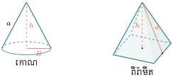
សូលីតដែលគេជួបប្រទះញឹកញាប់គឺ ពីរ៉ាមីតដូចខាងក្រោម ។
- \(\displaystyle [OS]\) កែងនឹងប្លង់បាតហៅថាកម្ពស់នៃពីរ៉ាមីត
- \(\displaystyle [SH] \perp [AB]\) ឬ \(\displaystyle [SH] \perp [BC]\) ឬ \(\displaystyle [SH] \perp [CD]\) ហៅថា អាប៉ូតែម ។
ដើម្បីគណនាផ្ទៃក្រឡានៃសូលីត គេពន្លាតពីរ៉ាមីតនិយ័តដែលមានបាតជាការេដាក់លើប្លង់មួយ ។
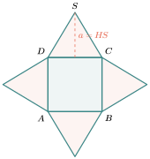
ជារួម : ផ្ទៃក្រឡាខាងនៃពីរ៉ាមីតនិយ័តស្មើនឹងផលគុណរវាងកន្លះបរិមាត្របាតនិងអាប៉ូតែម
ដូចគ្នានេះដែរ បើគេពន្លាតផ្ទៃខាងនៃកោណដោយកាត់តាមជានេត្រមួយដាក់លើប្លង់ នោះគេបានចម្រៀកថាសមួយហើយវណ្ឌកំណត់ចម្រៀកថាសនេះមានរង្វាស់ស្មើនឹងបរិមាត្រនៃរង្វង់បាតរបស់កោណ ។ (ថាសផ្ចិត \(\displaystyle S\) កាំ \(\displaystyle a\))
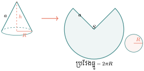
ចម្រៀកថាសជាផ្នែកមួយនៃថាសដែលត្រូវនឹងប្រវែងធ្នូ \(\displaystyle 2\pi R\) តាង \(\displaystyle S\) ជាផ្ទៃក្រឡានៃចម្រៀកថាស ផ្ទៃថាស \(\displaystyle \pi a^2\) ត្រូវនឹងប្រវែងធ្នូ \(\displaystyle 2\pi a\) ផ្ទៃចម្រៀកថាស \(\displaystyle S\) ត្រូវនឹងប្រវែងធ្នូ \(\displaystyle 2\pi R\)
ជារួម : ផ្ទៃក្រឡាខាងនៃកោណគឺ \(\displaystyle S_L = \pi R a\) (\(\displaystyle R\) កាំបាត , \(\displaystyle a\) ជានេត្រ)ផ្ទៃក្រឡាទាំងអស់គឺ \(\displaystyle S_T = \pi R a + \pi R^2 = \pi R(a + R)\)
លំហាត់គំរូទី 1 : ចូរគណនាផ្ទៃក្រឡាខាងនៃពីរ៉ាមីតនិយ័ត (តាមរូបខាងក្រោម) ។
ចម្លើយ : ផ្ទៃក្រឡាខាង
ដូចនេះ ផ្ទៃក្រឡាខាងនៃពីរ៉ាមីតនិយ័តគឺ \(\displaystyle S_L = 126\text{cm}^2\) ។
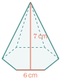
លំហាត់គំរូទី 2 : ចូរគណនាផ្ទៃក្រឡាទាំងអស់នៃពីរ៉ាមីតនិយ័ត (តាមរូបខាងក្រោម) ។
ចម្លើយ : ផ្ទៃក្រឡាខាង
ផ្ទៃក្រឡាបាត
ផ្ទៃក្រឡាទាំងអស់
ដូចនេះ ផ្ទៃក្រឡាទាំងអស់គឺ : \(\displaystyle S_T = 585\text{cm}^2\) ។
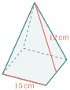
លំហាត់គំរូទី 3 : ចូរគណនាផ្ទៃក្រឡាខាងនិងផ្ទៃក្រឡាទាំងអស់នៃកោណ (តាមរូបខាងស្តាំ) ។ (\(\displaystyle \pi \approx 3.14\))
ចម្លើយ : ផ្ទៃក្រឡាខាង
ផ្ទៃក្រឡាទាំងអស់
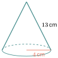
ប្រតិបត្តិ : ចូរគណនាផ្ទៃក្រឡាខាងនិងផ្ទៃក្រឡាទាំងអស់តាមរូបខាងក្រោម ។
1.2. មាឌនៃសូលីត
ខាងក្រោមនេះជារូបមន្តនៃមាឌសូលីត ។
| រូប | ឈ្មោះ | មាឌ \(\displaystyle (V)\) | ||||||
| ពីរ៉ាមីត |
| |||||||
| កោណ |
| |||||||
| ស៊្វែ ឬ ប៊ូល |
|
លំហាត់គំរូទី 1 : ចូររកមាឌនៃពីរ៉ាមីត (រូបខាងស្តាំ) ។
ចម្លើយ : មាឌនៃពីរ៉ាមីត
ផ្ទៃក្រឡាបាត
មាឌនៃពីរ៉ាមីត
ដូចនេះ មាឌនៃពីរ៉ាមីត \(\displaystyle V = 3240\text{cm}^3\) ។
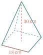
លំហាត់គំរូទី 2 : កោណមួយមានកម្ពស់ \(\displaystyle 24\text{cm}\) ហើយមានមាឌ \(\displaystyle 3018\text{cm}^3\) ។ ចូររកផ្ទៃក្រឡាបាតកោណ ។
ចម្លើយ : ផ្ទៃក្រឡាបាតកោណ
តាមរូបមន្ត \(\displaystyle V = \frac{S_B \times h}{3}\) នាំឱ្យ \(\displaystyle S_B = \frac{3V}{h}\)
ដូចនេះ ផ្ទៃក្រឡាបាតកោណ \(\displaystyle S_B = 377.25\text{cm}^2\) ។
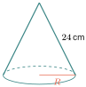
លំហាត់គំរូទី 3 : ចូររកផ្ទៃក្រឡាស៊្វែនិងមាឌប៊ូលដែលកាំមានប្រវែង \(\displaystyle 14\text{cm}\) ។
ចម្លើយ : ផ្ទៃក្រឡាស៊្វែ
មាឌប៊ូល
ប្រតិបត្តិ : កោណមួយមានកម្ពស់ \(\displaystyle 28\text{cm}\) និង កាំនៃថាសបាតមានប្រវែង \(\displaystyle 13\text{cm}\) ។ ចូរគណនាមាឌកោណគិតជា \(\displaystyle \text{dm}^3\) ។
2. ផលធៀបនៃផ្ទៃក្រឡានិងមាឌនៃរូបដូចគ្នា
2.1. ផលធៀបផ្ទៃក្រឡានៃរូបដូចគ្នា
ឧទាហរណ៍ទី 1 : គេមានការេ \(\displaystyle A\) និងការេ \(\displaystyle B\) ជាការេដូចគ្នារូបខាងក្រោម ។ តើផលធៀបនៃផ្ទៃក្រឡារបស់វាស្មើនឹងប៉ុន្មាន ?
ផ្ទៃក្រឡាការេ \(\displaystyle A\) ស្មើនឹង \(\displaystyle 1 \times 1 = 1\text{cm}^2\)
ផ្ទៃក្រឡាការេ \(\displaystyle B\) ស្មើនឹង \(\displaystyle 3 \times 3 = 9\text{cm}^2\)
ផលធៀបរវាងជ្រុងនៃការេទាំងពីរគឺ \(\displaystyle \frac{1}{3}\)
ផលធៀបរវាងផ្ទៃក្រឡានៃការេទាំងពីរគឺ \(\displaystyle \frac{1}{9} = \left(\frac{1}{3}\right)^2\) ។
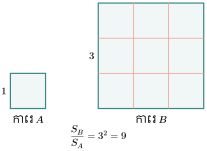
ឧទាហរណ៍ទី 2 : គេមានចតុកោណកែងពីរ (ដូចរូបខាងស្តាំ) ។
ផលធៀបរវាងបណ្តោយទាំងពីរស្មើនឹង \(\displaystyle \frac{15}{10} = \frac{3}{2}\)
ផលធៀបរវាងទទឹងទាំងពីរស្មើនឹង \(\displaystyle \frac{6}{4} = \frac{3}{2}\)
ផលធៀបរវាងផ្ទៃក្រឡាទាំងពីរស្មើនឹង
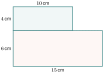
សម្គាល់ : ជ្រុងនៃចតុកោណកែងទាំងពីរសមាមាត្រគ្នាជាចតុកោណកែងដូចគ្នា ។
ជារួម : កាលណារូបពីរដូចគ្នាផលធៀបរវាងផ្ទៃក្រឡាស្មើនឹងការេនៃផលធៀបរវាងធាតុត្រូវគ្នាពីរ ។
លំហាត់គំរូទី 1 : ត្រីកោណទាំងពីរខាងស្តាំនេះជាត្រីកោណដូចគ្នា ។ ចូររកផ្ទៃក្រឡាត្រីកោណ \(\displaystyle S\) ។
ចម្លើយ : ផ្ទៃក្រឡាត្រីកោណ \(\displaystyle S\)
បើ \(\displaystyle S\) ជាផ្ទៃក្រឡាដែលត្រូវរក
គេបាន
នាំឱ្យ
ដូចនេះ \(\displaystyle S = 81\text{cm}^2\) ។
លំហាត់គំរូទី 2 : គេមានចតុកោណកែងពីរដូចគ្នាដែលមានមានផ្ទៃក្រឡារៀងគ្នាស្មើនឹង \(\displaystyle 18\text{dm}^2\) និង \(\displaystyle 8\text{dm}^2\) ។ ចូរគណនាបណ្តោយចតុកោណធំដោយដឹងថា ចតុកោណតូចមានបណ្តោយស្មើនឹង \(\displaystyle 6\text{dm}\) ។
ចម្លើយ : ចូរប្រវែងចតុកោណកែងធំ
តាង \(\displaystyle x\) ជាបណ្តោយចតុកោណកែងធំ
គេបាន
នាំឱ្យ
ដូចនេះ បណ្តោយចតុកោណកែងធំគឺ \(\displaystyle x = 9\text{dm}\) ។
លំហាត់គំរូទី 3 : នៅពេលសិក្សាមេរៀនភូមិវិទ្យាលោកគ្រូបានយកផែនទីនៃខេត្តមួយរបស់សាលារៀនដែលមានមាត្រដ្ឋាន \(\displaystyle \frac{1}{2~500}\) ។ គេដឹងថាបរិមាត្រនៃដីធ្លាសាលារៀននៅលើប្លង់មានរាងចតុកោណកែងមានរង្វាស់ \(\displaystyle 3\text{cm}\) និង \(\displaystyle 2\text{cm}\) ។ ចូរគណនាផ្ទៃក្រឡាដីធ្លារបស់សាលារៀនពិត ។
ចម្លើយ : ផ្ទៃក្រឡាដីធ្លាសាលារៀន
នៅក្នុងផែនទីជាប្លង់រួមតូចនៃទីធ្លាសាលារៀនដែលមានផលធៀបមាត្រដ្ឋានស្មើនឹង \(\displaystyle \frac{1}{2~500}\)
បើ \(\displaystyle S\) ជាផ្ទៃក្រឡារបស់សាលារៀន ហើយ \(\displaystyle S'\) ជាផ្ទៃក្រឡានៅក្នុងផែនទី
គេបាន
នាំឱ្យ
តែ
នោះ
ដូចនេះ ទីធ្លាសាលារៀនមានផ្ទៃក្រឡា \(\displaystyle S = 3~750\text{m}^2\) ។
ប្រតិបត្តិ : ចូរសរសេរផលធៀបបរិមាត្រនិងផលធៀបផ្ទៃក្រឡានៃរូបដូចគ្នាខាងក្រោម ។
2.2. ផលធៀបមាឌនៃសូលីតដូចគ្នា
ឧទាហរណ៍ទី 1 : គេមានគូបពីរ (ដូចរូបខាងស្តាំ)
មាឌរបស់គូប (a) ស្មើនឹង \(\displaystyle V_a = 1 \times 1 \times 1 = 1\text{cm}^3\)
មាឌរបស់គូប (b) ស្មើនឹង \(\displaystyle V_b = 2 \times 2 \times 2 = 8\text{cm}^3\)
ផលធៀបបរិមាត្រស្មើនឹង \(\displaystyle \frac{1}{2}\)
ផលធៀបមាឌស្មើនឹង \(\displaystyle \frac{1 \times 1 \times 1}{2 \times 2 \times 2} = \left(\frac{1}{2}\right)^3\) ។
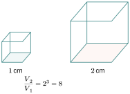
ឧទាហរណ៍ទី 2 : ចូរពិនិត្យប្រអប់ពីរដូចគ្នា (រូបខាងក្រោម) ។
ផលធៀបបណ្តោយស្មើនឹង \(\displaystyle \frac{15}{10} = \frac{3}{2}\)
ផលធៀបទទឹងស្មើនឹង \(\displaystyle \frac{12}{8} = \frac{3}{2}\)
ផលធៀបកម្ពស់ស្មើនឹង \(\displaystyle \frac{9}{6} = \frac{3}{2}\)
ផលធៀបមាឌស្មើនឹង \(\displaystyle \frac{3 \times 3 \times 3}{2 \times 2 \times 2} = \left(\frac{3}{2}\right)^3\)
ប្រអប់មានវិមាត្រសមាមាត្រគ្នាជាប្រអប់ដូចគ្នា ។
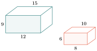
ជារួម : កាលណាសូលីតពីរដូចគ្នាផលធៀបរវាងមាឌ ស្មើនឹងគូបនៃផលធៀបរវាងធាតុត្រូវគ្នាពីរ ។
លំហាត់គំរូទី 1 : ផលធៀបរវាងផ្ទៃក្រឡាទាំងអស់នៃគូបស្មើនឹង \(\displaystyle \frac{16}{25}\) ។ ចូរគណនាផលធៀបរវាងជ្រុងនិងផលធៀបរវាងមាឌនៃគូបពីរដូចគ្នា ។
ចម្លើយ : យើងដឹងថាផលធៀបរវាងផ្ទៃក្រឡាស្មើនឹងការេផលធៀបរវាងជ្រុងត្រូវគ្នា
តាង \(\displaystyle x\) ជាផលធៀបរវាងជ្រុងនោះ : \(\displaystyle x^2 = \frac{16}{25} \quad , \quad x = \frac{4}{5}\)
ដូចនេះផលធៀបរវាងមាឌស្មើនឹង \(\displaystyle \left(\frac{4}{5}\right)^3 = \frac{64}{125}\) ។
លំហាត់គំរូទី 2 : ផលធៀបរវាងបណ្តោយនៃប្រលេពីប៉ែតកែងដូចគ្នាពីរស្មើនឹង \(\displaystyle \frac{4}{3}\) ។ បើប្រលេពីប៉ែតកែងតូចមានមាឌ \(\displaystyle 54\text{dm}^3\) ចូររកមាឌប្រលេពីប៉ែតកែងធំ ។
ចម្លើយ : មាឌប្រលេពីប៉ែតកែងធំ
តាង \(\displaystyle V\) ជាមាឌនៃប្រលេពីប៉ែតកែងធំ
គេបាន
នាំឱ្យ
ដូចនេះ \(\displaystyle V = 128\text{dm}^3\) ។
លំហាត់គំរូទី 3 : ផលធៀបរវាងផ្ទៃក្រឡាទាំងអស់នៃគូបស្មើនឹង \(\displaystyle 16 : 25\) ។ តើគូបធំមានម៉ាសប៉ុន្មានបើគេដឹងថាគូបតូចមានម៉ាសស្មើនឹង \(\displaystyle 32\text{g}\) (គូបទាំងពីរធ្វើពីវត្ថុធាតុតែមួយ) ។ គូបទាំងពីរជាគូបដូចគ្នា ។
ចម្លើយ : ម៉ាសគូបធំ
ផលធៀបរវាងផ្ទៃក្រឡាទាំងអស់ \(\displaystyle \frac{S}{S'} = \frac{16}{25} = \left(\frac{4}{5}\right)^2\)
ផលធៀបរវាងមាឌ \(\displaystyle \frac{v}{V} = \left(\frac{4}{5}\right)^3 = \frac{64}{125}\)
យើងដឹងថាផលធៀបរវាងម៉ាសគូបទាំងពីរស្មើនឹងផលធៀបរវាងមាឌរបស់វា
បើ \(\displaystyle m\) និង \(\displaystyle M\) ជាម៉ាសនៃគូបទាំងពីរនាំឱ្យ \(\displaystyle \frac{m}{M} = \frac{v \cdot \mu}{V \cdot \mu} = \frac{v}{V} = \frac{64}{125}\) ដែល \(\displaystyle \mu\) ជាម៉ាសមាឌ
ដូចនេះ \(\displaystyle M = 62.5\text{g}\) ។
ប្រតិបត្តិ : គេឱ្យ \(\displaystyle DE \parallel BC \quad AD = 3\text{cm} \quad , \quad AB = 5\text{cm}\) ។ ដោយដឹងថាផ្ទៃក្រឡាត្រីកោណ \(\displaystyle ADE = 6\text{cm}^2\) ។
- ក. ចូររកក្រឡាផ្ទៃត្រីកោណ \(\displaystyle ABC\)
- ខ. ចូររកក្រឡាផ្ទៃចតុកោណ \(\displaystyle DECB\) ។
លំហាត់
- ចូររកផ្ទៃក្រឡាខាងនិងផ្ទៃក្រឡាទាំងអស់នៃរូបខាងក្រោម ។
ចូររកមាឌកោណដែលមានកម្ពស់និងកាំបាតក្នុងករណីនីមួយៗខាងក្រោម ។
- ក. \(\displaystyle R = 5\text{cm}\) , \(\displaystyle h = 12\text{cm}\)
- ខ. \(\displaystyle R = 3.4\text{cm}\) , \(\displaystyle h = 8.9\text{cm}\)
- គ. \(\displaystyle R = 3.7\text{cm}\) , \(\displaystyle h = 7\text{cm}\)
- ឃ. \(\displaystyle R = 5.2\text{cm}\) , \(\displaystyle h = 11\text{cm}\)
- ង. \(\displaystyle R = \sqrt{5}\text{mm}\) , \(\displaystyle h = 13.4\text{mm}\)
- ច. \(\displaystyle R = 7\text{dm}\) , \(\displaystyle h = 16\text{dm}\) ។
ចូររកផ្ទៃក្រឡាស៊្វែនិងមាឌប៊ូលក្នុងករណីនីមួយៗខាងក្រោម ។
- ក. \(\displaystyle R = 3\text{cm}\)
- ខ. \(\displaystyle D = 18\text{dm}\)
- គ. \(\displaystyle R = 3.7\text{cm}\)
- ឃ. \(\displaystyle D = 23.2\text{cm}\) ។
ចូររកកាំស៊្វែដោយស្គាល់ផ្ទៃក្រឡាដូចខាងក្រោម ។
- ក. \(\displaystyle S = \frac{36}{25}\pi\text{cm}^2\)
- ខ. \(\displaystyle S = \frac{46}{16}\pi\text{m}^2\)
- គ. \(\displaystyle S = \frac{12}{5}\pi\text{dm}^2\)
- ឃ. \(\displaystyle S = 1~764\pi\text{cm}^2\) ។
ចូររកកាំនៃប៊ូលដោយស្គាល់មាឌ
- ក. \(\displaystyle V = 288\pi\text{cm}^3\)
- ខ. \(\displaystyle V = \frac{32}{16}\pi\text{m}^3\) ។
គេឱ្យកោណមួយនិងកន្លះស៊្វែដូចរូបខាងស្តាំ ។
- ក. ចូររកមាឌទាំងអស់នៃសូលីត ។
- ខ. ចូររកផ្ទៃក្រឡាទាំងអស់នៃសូលីត ។
- គេឱ្យបន្ទាត់ \(\displaystyle AB \parallel CD\) ដែល \(\displaystyle \frac{BE}{CE} = \frac{1}{2}\) ។ ផ្ទៃក្រឡា \(\displaystyle \Delta CED\) ស្មើនឹង \(\displaystyle 16\text{cm}^2\) ចូររកផ្ទៃក្រឡា \(\displaystyle \Delta AEB\) ។
- តើផ្ទៃក្រឡាការេ \(\displaystyle DEFG\) តូចជាងផ្ទៃក្រឡា \(\displaystyle ABCD\) ប៉ុន្មានដង ?
- គេឱ្យប្រលេឡូក្រាម \(\displaystyle ABCD\) និង \(\displaystyle I\) ជាចំណុចកណ្ដាលនៃ \(\displaystyle AB\) ។ បន្ទាត់ \(\displaystyle BD\) និង \(\displaystyle CI\) ប្រសព្វគ្នាត្រង់ \(\displaystyle O\) ។ តើផ្ទៃក្រឡា \(\displaystyle \Delta BIO\) តូចជាងផ្ទៃក្រឡា \(\displaystyle \Delta DOC\) ប៉ុន្មានដង ?
- រូបថតនៃផ្ទាំងមួយមានកំពស់ \(\displaystyle 3\text{cm}\) និងមានផ្ទៃក្រឡាស្មើនឹង \(\displaystyle 9\text{cm}^2\) ។ គេដឹងថាជញ្ជាំងមានកម្ពស់ពិត \(\displaystyle 6\text{m}\) ។ តើវាមានផ្ទៃក្រឡាពិតប្រាកដប៉ុន្មាន \(\displaystyle \text{m}^2\) ។
- ផ្ទៃក្រឡានៃទីធ្លាសាលាមួយមានរង្វាស់ \(\displaystyle 144\text{cm}^2\) នៅក្នុងផែនទី 1 ហើយមានរង្វាស់ស្មើនឹង \(\displaystyle 256\text{cm}^2\) នៅក្នុងផែនទីពីរ ។ ដោយដឹងថាវិមាត្រមួយនៃទីធ្លានោះស្មើនឹង \(\displaystyle 18\text{cm}\) នៅក្នុងផែនទីទីមួយ ។ តើវិមាត្រនោះស្មើនឹងប៉ុន្មាន \(\displaystyle \text{cm}\) នៅក្នុងផែនទីទីពីរ ?
- ទីធ្លាមួយមានផ្ទៃក្រឡាពិត \(\displaystyle 9~600\text{m}^2\) ។ តើផ្ទៃក្រឡានេះមានប៉ុន្មាន \(\displaystyle \text{cm}^2\) នៅក្នុងប្លង់មួយដែលមានមាត្រដ្ឋាន \(\displaystyle \frac{1}{2~500}\) ។
គេកាត់កោណឱ្យស្របនឹងបាតជាបីចំណែក (ដូចរូបខាងស្តាំ) ។ មុខកាត់មានអង្កត់ផ្ចិតរៀងគ្នា \(\displaystyle 6\text{cm}\) និង \(\displaystyle 10\text{cm}\) ។
- ក. ចូរគណនា \(\displaystyle x\)
- ខ. ចូររកមាឌនៃកោណនោះ ។
\(\displaystyle SABCD\) ជាពីរ៉ាមីតដែលមានបាតជាការេ ។ ជ្រុងនៃការេនេះមានប្រវែង \(\displaystyle 60\text{cm}\) ។ កម្ពស់ \(\displaystyle [SO]\) នៃពីរ៉ាមីតមានប្រវែង \(\displaystyle 80\text{cm}\) គេកាត់ពីរ៉ាមីតនេះឱ្យស្របនឹងបាត ។ គេបានការេ \(\displaystyle EFGK\) ។ គេឱ្យ \(\displaystyle OO' = x\) ។
- ក. ចូររកជ្រុងនៃការេ \(\displaystyle EFGK\) តាមតម្លៃ \(\displaystyle x\) ។
- ខ. បើ \(\displaystyle x = 30\text{cm}\) គណនាមាឌនៃកំណាត់ពីរ៉ាមីតខណ្ឌដោយ \(\displaystyle ABCD\) និង \(\displaystyle EFGK\) ។
តាមរូបខាងស្តាំនេះគេឱ្យ \(\displaystyle BA = 6\) , \(\displaystyle SA = 8\) , \(\displaystyle SA' = \frac{2}{3}SA\) ។ រង្វាស់គិតជា \(\displaystyle \text{cm}\) ។
- ក. ចូរគណនា \(\displaystyle A'B'\) ។
- ខ. ចូរគណនាផ្ទៃក្រឡានៃការេ \(\displaystyle A'B'C'D'\) រួចផ្ទៀងផ្ទាត់ថាផ្ទៃក្រឡា \(\displaystyle A'B'C'D' = \left(\frac{2}{3}\right)^2 \times\) ផ្ទៃក្រឡា \(\displaystyle ABCD\) ។
- គ. ចូរបង្ហាញថា \(\displaystyle SO' = \frac{2}{3}SO\) រួចទាញបញ្ជាក់ថាមាឌ \(\displaystyle SA'B'C'D' = \left(\frac{2}{3}\right)^3 \times\) មាឌ \(\displaystyle SABCD\) ។
ក្នុងរូបខាងស្តាំនេះគេឱ្យ \(\displaystyle SM' = \frac{1}{2}SM\) , \(\displaystyle SO = 10\text{cm}\) , \(\displaystyle OM = 6\text{cm}\) ។
- ក. ចូរគណនា \(\displaystyle O'M'\) រួចផ្ទៀងផ្ទាត់ផ្ទៃក្រឡាថាស \(\displaystyle (O') = \left(\frac{1}{2}\right)^2\) ផ្ទៃក្រឡាថាស \(\displaystyle (O)\)
- ខ. ចូរបង្ហាញថា \(\displaystyle SO' = \frac{1}{2}SO\) ។
- គ. ចូរស្រាយបញ្ជាក់ថា មាឌនៃកោណនៃកំពូល \(\displaystyle S\) និងបាត \(\displaystyle O'\) ស្មើនិងមាឌនៃកោណនៃកំពូល \(\displaystyle S\) និងបាត \(\displaystyle (O)\) គុណនិង \(\displaystyle \left(\frac{1}{2}\right)^3\) ។
- អ្នកលក់ឪឡឹកម្នាក់កំណត់លក់ផ្លែឪឡឹកតូចពីរ ថ្លៃស្មើនិងផ្លែឪឡឹកធំមួយ ។ ដោយកាំនៃផ្លែឪឡឹកតូចស្មើនិង \(\displaystyle \frac{3}{4}\) នៃកាំឪឡឹកធំ ។ តើអ្នកទិញគួរជ្រើសរើសមួយណាដើម្បីបានចំណេញជាង ?
- ឈ្មួញម្នាក់លក់ម៉ាស៊ីនបោកខោអាវពីរប្រភេទដែលមានរាងស៊ីឡាំងដូចគ្នា ។ តែវិមាត្រនៃម៉ាស៊ីនទីមួយស្មើនឹង \(\displaystyle \frac{9}{10}\) នៃវិមាត្រម៉ាស៊ីនទីពីរ ។ តម្លៃនៃម៉ាស៊ីនតូចស្មើនឹង \(\displaystyle \frac{7}{10}\) នៃម៉ាស៊ីនធំ ។ តើគេគួរជ្រើសរើសយកម៉ាស៊ីនប្រភេទណាទើបចំណេញជាង ?
ស៊ីឡាំងមួយមានរង្វាស់កាំ \(\displaystyle R\) និងកម្ពស់ \(\displaystyle h\) គេយកកោណដែលមានរង្វាស់កាំ \(\displaystyle R\) និងកម្ពស់ \(\displaystyle h\) ដាក់ក្នុងស៊ីឡាំងតាមរូប ។
- ក. ចូរគណនាមាឌកោណនិងមាឌនៃស៊ីឡាំង
- ខ. ចូរគណនាផលធៀបរវាងមាឌនៃកោណនិងមាឌនៃស៊ីឡាំង ។
កោណមួយមានរង្វាស់កាំ \(\displaystyle R\) និងកម្ពស់ \(\displaystyle h\) នៅក្នុងកោណនោះមានស៊ីឡាំងមួយដែលមានរង្វាស់កាំស្មើនឹង \(\displaystyle \frac{R}{2}\) ។
- ក. ចូរគណនាមាឌនៃស៊ីឡាំងនោះ
- ខ. ចូរគណនាផលធៀបរវាងមាឌនៃស៊ីឡាំងនិងមាឌនៃកោណ ។
គូបមួយមានរង្វាស់ជ្រុងស្មើនឹង \(\displaystyle 2a\) នៅក្នុងគូបនោះគេមានស៊ីឡាំងមួយដែលមានរង្វាស់កាំស្មើនឹង \(\displaystyle a\) និងមានកម្ពស់ស្មើនឹង \(\displaystyle 2a\) ។
- ក. ចូរគណនាមាឌនៃស៊ីឡាំង
- ខ. ចូរគណនាផលធៀបរវាងមាឌនៃស៊ីឡាំងនិងមាឌនៃគូប ។
- គូបមួយមានរង្វាស់ជ្រុង \(\displaystyle 2\text{cm}\) ហើយស៊្វែរមានកាំ \(\displaystyle r\) ។ ចូរកំណត់កាំ \(\displaystyle r\) ដោយដឹងថាមាឌនៃគូបស្មើនឹងពីរដងនៃមាឌស៊្វែ ។ គេបង្គត់ \(\displaystyle \pi = 3\) ។
- ផ្ទៃក្រឡានៃត្រីកោណសម័ង្សដែលមានជ្រុង \(\displaystyle 1\text{cm}\) ។ តើត្រូវជាប៉ុន្មានភាគរយនៃផ្ទៃក្រឡានៃការេដែលមានរង្វាស់ជ្រុង \(\displaystyle 1\text{cm}\) ។
ការវាយតម្លៃសមត្ថភាព (PISA)
ធុងទឹកភ្លៀង (Rainwater Tank)
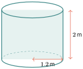
ធុងទឹករាងស៊ីឡាំងមានកាំបាត \(\displaystyle 1.2\) m និងកម្ពស់ \(\displaystyle 2\) m។ ប្រើ \(\displaystyle \pi\approx3.14\) និង \(\displaystyle 1\,\mathrm{m^3}=1000\) លីត្រ។
សំណួរទី១៖ គណនាមាឌអតិបរមារបស់ធុងគិតជា \(\displaystyle \mathrm{m^3}\)។
ចម្លើយ៖
សំណួរទី២៖ បម្លែងមាឌនោះទៅជាលីត្រ។ ចម្លើយ៖
សំណួរទី៣៖ នៅរដូវប្រាំង ធុងមានទឹកត្រឹម \(\displaystyle 75\%\)។ តើមានទឹកប៉ុន្មានលីត្រ?
ចម្លើយ៖
© ២០២៦ លោកគ្រូ សាន សុខលី · «គណិតវិទ្យាថ្នាក់ទី៩ បែបទំនើប» · រក្សាសិទ្ធិគ្រប់យ៉ាង។ សៀវភៅនេះកំពុងសរសេរ ខ្លឹមសារអាចនឹងកែប្រែ។